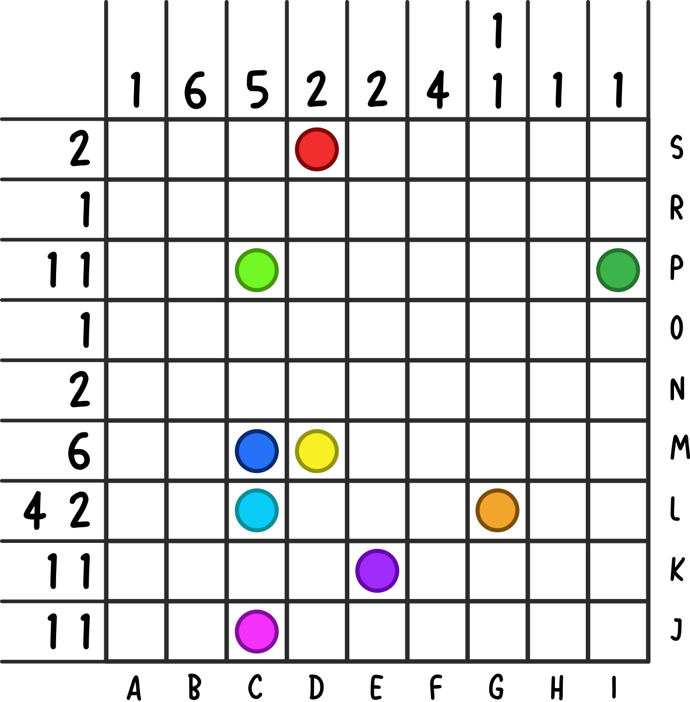

META: Jurassic Mark
You'll need to connect the dots.
How will you save the dinosaurs?

The End
| three horned face | _ (_) _ _ _ _ (_) _ _ _ _ |
| near crested lizard | (_) _ _ _ _ _ _ _ _ _ _ _ (_) _ _ |
| fukui lizard | (_) _ _ _ _ _ _ _ (_) _ _ |
| chongqing lizard | (_) _ _ _ _ (_) _ _ _ _ _ _ _ _ _ _ |
| thief of fukui | (_) _ (_) _ _ _ _ _ _ _ _ |
| erlik's lizard | _ _ _ (_) (_) _ _ _ _ _ _ _ |
| hollow form | _ _ _ _ _ _ (_) _ (_) _ _ |
| spine lizard | (_) _ (_) _ _ _ _ _ _ _ _ |
| andes lizard | _ _ (_) _ _ _ _ (_) _ _ |